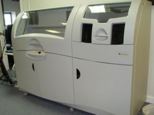

3d printingMarch 17th, 2009
This morning saw the delivery of a ZPrinter 650 3D printer made by Z-Corp. Yesterday, the printer arrived on a delivery vehicle that didn’t have a platform for lowering the crate, so it had to go and come back on a suitable delivery vehicle.
Anatol, from Thinglab (Inition), was here to supervise the delivery. Given the sheer size of the printer, we decided to take it out of the crate on the back of the lorry, and then separate the Post Processing Unit (PPU) away from the main body of the printer, allowing us to get the printer off the lorry, in the building, in the lift, and up to our floor. Taking it out of the crate in the back of the lorry requires sufficient space (about 6m) to get the printer out of the crate. Conveniently, Z-Corp have cleverly designed the crate to include in-built ramps that are deployed to roll the printer off the crate.

Once in the building, Anatol was able to prepare the machine ready for the first print – a head alignment.
{kind=link}